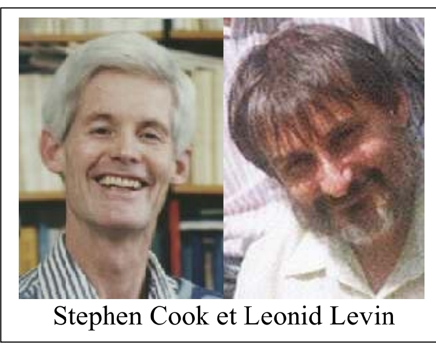
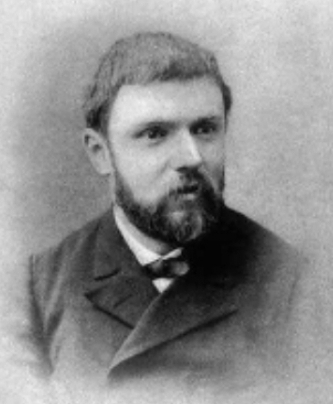

Le P problème et le NP problème
Imaginez que vous deviez organiser le logement d'un ensemble de 400 étudiants. Vous ne disposez que d'une seule résidence comprenant exactement 100 chambres, aussi vous êtes amené à ne retenir qu'une partie de ces étudiants. Pour compliquer l'affaire, le doyen de votre université vous impose une liste de paires d'étudiants à ne pas faire habiter ensemble. Le nombre de possibilités pour un tel arrangement dépasse le nombre d'atomes dans l'univers et on ne pourra jamais construire un ordinateur capable de produire au moyen de sa seule force de calcul une liste convenable. Le problème, qui est un des plus importants actuellement en mathématiques appliquées à l'informatique, est bien entendu de savoir si il existe un procédé permettant de calculer la liste voulue en un temps limité. A l'opposé, si on vous donne une liste de 100 étudiants, il est facile de vérifier si cette liste satisfait ou non aux critères qu'on vient de fixer. On appelle P problème tout problème qui consiste comme ici à trouver une liste d'éléments dans un ensemble donné et ce relativement à un critère fixé à l'avance. Le NP problème est opposé au P problème. Il consiste à vérifier si une liste donnée est en adéquation avec les conditions données au préalable. Stephen Cook et Leonid Levin ont les premiers, et de manière indépendante, formulés le P problème et le NP problème en 1971.

La conjecture de Poincaré
Imaginez un fil élastique que l'on peut contracter ou étirer à l'infini. On noue ce fil afin d'en faire une boucle qu'on place à la surface d'un ballon (sphère). On peut déformer cette boucle sans la déchirer et sans la faire quitter la surface du ballon jusqu'à la réduire à un point. La même manipulation à la surface d'une chambre à air (tore) est impossible à réaliser. Un objet géométrique qui possède cette propriété est dit simplement connexe. Henri Poincaré, mathématicien français du début du 20e siècle a démontré que la sphère était caractérisée par cette propriété. Il a conjecturé qu'il en était de même pour la sphère de l'espace de dimension 4. Cette question est en fait d'une difficulté extraordinaire et les mathématiciens cherchent à y répondre depuis 1 siècle.

.png)